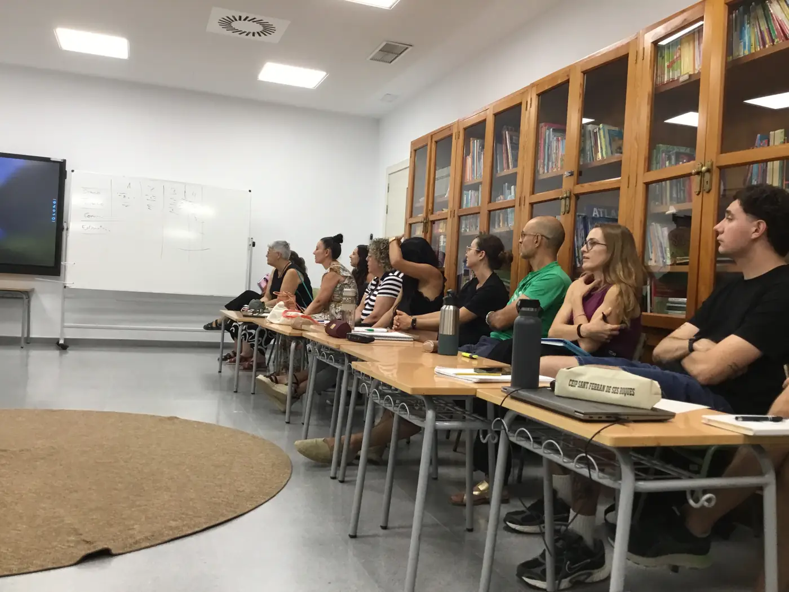
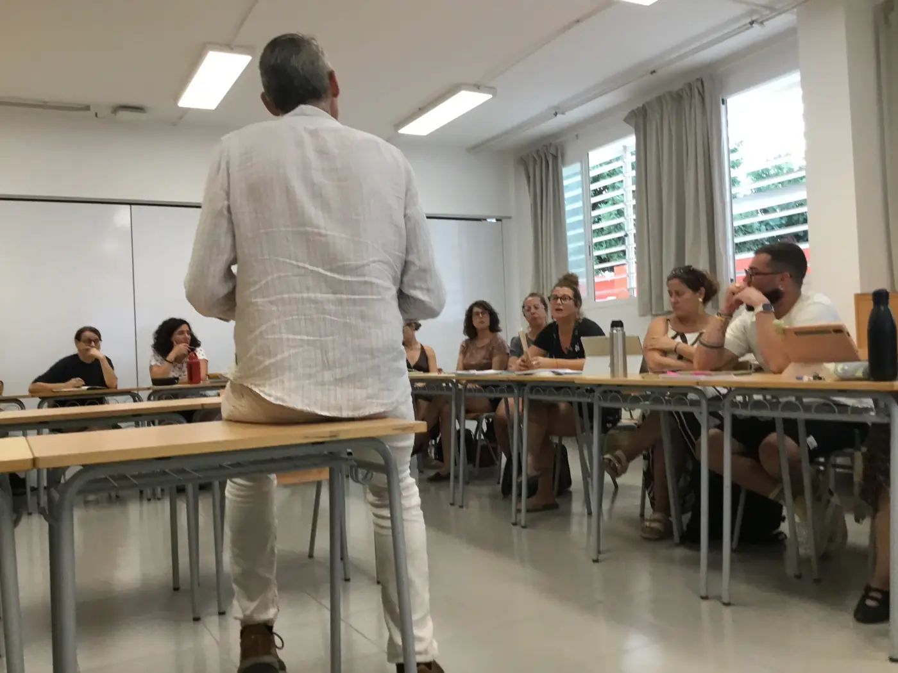
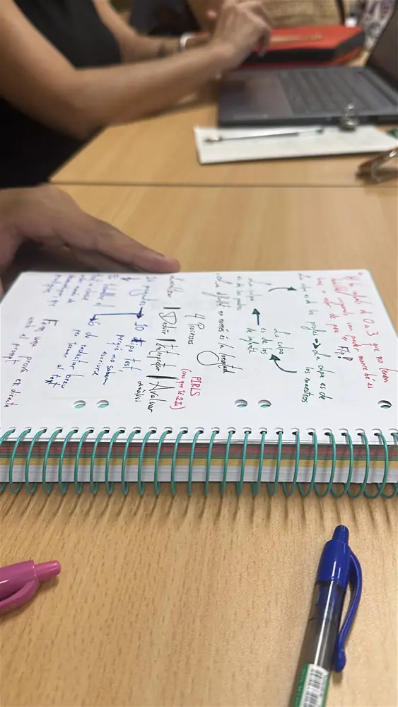

CEIP Sant Ferran de ses Roques, 28 de setembre de 2026
Espais de treball 2026-27
Per al professorat de cada formació: el calendari de sessions, les presentacions, els àudios i pòdcasts, els resums, les targetes de repàs i l'eina de comprensió lectora. Cada espai creix sessió a sessió.
Quatre centres de l'illa han fet formació amb Miguel Ángel Tirado entre 2024 i 2027. Des d'aquí podeu anar al web de cada centre i al seu espai de treball.
Tres cursos, quatre centres, una ruta que continua
Cada punt és una formació en centre. Les línies uneixen el que un centre va començar un curs i va continuar el següent. En color, les formacions amb Miguel Ángel Tirado.
Formació acabada, amb Miguel Ángel TiradoFormació en curs, 2026-27Antecedent sense Miguel Ángel Tirado
7formacions en centre amb Miguel Ángel Tirado
145 hde formació programades, 2024-2027
46certificacions docents en les formacions ja tancades
3cursos seguits a l'IES Marc Ferrer amb la lectura com a eix
Hores de formació amb Miguel Ángel Tirado, per cursSuma de les hores de cada formació en centre. El curs 2026-27 és programat.
Docents que han certificat, per formacióFormacions tancades. No inclou les persones coordinadores.
Amb Miguel Ángel TiradoAntecedent, sense ell
Hores de ponència per formacióQui hi ha posat les hores de ponència externa, segons les memòries.
Miguel Ángel TiradoAltres formadors i formadores
IES Marc Ferrer: de les proves de 1r d'ESO a un Pla Lector que s'avalua
Tres formacions encadenades i 50 hores. Cada una comença on acaba l'anterior.
3102024-25Amb M. Á. Tirado
Les habilitats lectores a través de les matèries
20 h FeC29 admesos15 certificats + coordinacióFormador: M. Á. Tirado (8 h)
Comprensió lectora i hàbit lector a totes les matèries de l'ESO. El professorat participant va crear proves específiques per a 1r d'ESO i va posar les bases per continuar el curs següent a través del Pla Lector.
«La creació de proves específiques per a 1r d'ESO, que han permès identificar de manera precisa les mancances i les fortaleses individuals i del grup classe.»Memòria del CEP de Formentera 2024-25
Coordinació i acompanyament: Neus Massanet i Rosa Martí, equip del CEP.
3442025-26Amb M. Á. Tirado
El foment de la llengua a través de la lectura
15 h · 7 sessions11 admesos9 certificats + coordinació
Diagnosi del pla lector, enquesta d'hàbits lectors, carnet lector i registre de préstecs. Revisió conjunta de les proves de comprensió lectora de 1r d'ESO i creació de les de 2n, en català i castellà, amb una escala de correcció compartida. La darrera sessió va fixar els acords per al 2026-27.
«Consolidar la lectura com una responsabilitat compartida per tot el professorat.»Memòria del CEP de Formentera 2025-26
Formadores i formador: M. Antònia Mora Morey i Jerònima Morey Matamalas (IES Capdepera), 3 h cadascuna; Miguel Ángel Tirado, 2 h. Coordinació i acompanyament: Neus Massanet i Rosa Martí, equip del CEP.
3542026-27En curs
Avaluació de la lectura i l'escriptura a través del Pla Lector
15 h programades30 places28/09/2026 a 25/02/2027
Dues ponències de Miguel Ángel Tirado, a l'inici i al final, i quatre sessions de treball al centre. L'objectiu és interpretar els resultats de les avaluacions de lectura i escriptura per decidir què reforçar, amb quin alumnat i quan, i fixar acords perquè el Pla Lector tengui continuïtat entre cursos, àrees i equips.
Sol·licitada i planificada el curs 2025-26 per Neus Massanet i Rosa Martí. Coordinació 2026-27: Carmen Moles i Enrique Ozán, equip del CEP.
Escoles d'infantil i primària: avaluar per aprendre, no només per qualificar
Dues escoles que fan de l'avaluació un projecte de centre, cada una des del seu punt de partida. Quatre formacions i 95 hores.
3382025-26Amb M. Á. Tirado
Avaluació de l'aprenentatge: coherència pedagògica i corresponsabilitat · CEIP Sant Ferran
30 h · 12 sessions29 admesos18 certificats + coordinació
Aprenentatges imprescindibles per cicle i nivell, ponderació dels criteris d'avaluació, millora de rúbriques, portafolis i registres, i una comunicació amb les famílies que ajudi de debò a aprendre.
«Revisar en profunditat el seu model d'avaluació, reforçar la coherència pedagògica interna i avançar cap a una presa de decisions més compartida.»Memòria del CEP de Formentera 2025-26
Formadores i formadors: Francesc Martín Martínez i Edurne Ojuel Sainz (Escola Sant Jordi, Vilanova i la Geltrú), 3,5 h cadascun; M. Asunció Gallardo Bonet (CEIPIESO Gabriel Vallseca), 3 h; Miguel Ángel Tirado, 2 h. Coordinació i acompanyament: Neus Massanet i Rosa Martí, equip del CEP.
3552026-27En curs
Què i com avaluar per millorar l'aprenentatge · CEIP Sant Ferran
30 h programades30 places28/09/2026 a 08/03/2027
Dues ponències de Miguel Ángel Tirado, a l'inici i al febrer. La resta són sessions de treball al centre. Continua les línies de la 338 i hi afegeix instruments d'autoavaluació dels infants per a cada nivell i situació de treball.

Primera sessió a la biblioteca de l'escola, 28/09/2026.
Formador: Miguel Ángel Tirado. Sol·licitada i planificada el curs 2025-26 per Neus Massanet i Rosa Martí. Coordinació 2026-27: Enrique Ozán i Carmen Moles, equip del CEP.
3332025-26Antecedent
L'avaluació per un aprenentatge inclusiu · CEIP Mestre Lluís Andreu
15 h32 admesos26 certificats + coordinació
Instruments d'avaluació inclusius (rúbriques, llistes de verificació, bases d'orientació, portafolis), autoavaluació i coavaluació. No hi va participar Miguel Ángel Tirado, però és el punt de partida de la 353.
«L'any vivent volen seguir aprofundint en la millora de la tasca avaluativa en el centre.»Memòria del CEP de Formentera 2025-26
Formadors: Francesc Martín Martínez i Edurne Ojuel Sainz, 3 h cadascun. Coordinació i acompanyament: Neus Massanet i Rosa Martí, equip del CEP.
3532026-27En curs
La mirada avaluativa: consensuar i millorar l'èxit a l'aula · CEIP Mestre Lluís Andreu
20 h programades25 places29/09/2026 a 23/02/2027
Dues ponències de Miguel Ángel Tirado, a l'inici i al febrer, i set sessions de treball al centre. Tasques competencials i instruments diversificats, criteris comuns d'avaluació per reduir la subjectivitat i ús dels resultats per prendre decisions immediates, com ara reforços, canvis de ritme o de metodologia. També es dissenya amb l'alumnat la seva autoavaluació.
Formador: Miguel Ángel Tirado. Sol·licitada i planificada el curs 2025-26 per Neus Massanet i Rosa Martí. Coordinació 2026-27: Enrique Ozán i Carmen Moles, equip del CEP.
El Pilar de la Mola: fer visible l'aprenentatge a les famílies
Una formació de 15 hores que va trobar un repte més gran del previst.
3122024-25Amb M. Á. Tirado
Evidències dels aprenentatges: família i escola
15 h FeC5 admesos4 certificats + coordinacióFormador: M. Á. Tirado (6 h)
Es volia treballar la comunicació amb les famílies. La intervenció del ponent va fer aflorar el problema de fons: la manca de confiança per una informació insuficient sobre com aprèn l'alumnat. El centre ho va reconèixer i va començar a sistematitzar els seus processos d'aprenentatge.
«La formació ha estat útil per identificar amb precisió el repte principal i començar a abordar-lo.»Memòria del CEP de Formentera 2024-25
Coordinació i acompanyament: Rosa Martí i Neus Massanet, equip del CEP.
Una illa, un municipi, una xarxa de centres
A Formentera, parlar de l'illa i parlar del municipi és el mateix. Això canvia la manera de pensar la formació del professorat.
Estatut d'Autonomia de les Illes Balears (2007), art. 61 i 63.2 · Llei 6/2007, DT 3a
El Consell Insular de Formentera està integrat pels regidors elegits a les eleccions municipals de l'illa i assumeix les competències de l'Ajuntament de Formentera. Consell i Ajuntament són una sola institució. Per això, quan quatre centres de l'illa treballen el mateix fil durant tres cursos, no parlam d'escoles aïllades: parlam d'un municipi que aprèn.
El CEP de Formentera és, a més, l'única institució de formació presencial del professorat a l'illa. Aquesta continuïtat amb els mateixos centres respon al model de feina que el CEP va descriure en el seu informe de 2024: acompanyar tots els centres i construir amb ells, curs rere curs, la formació que necessiten.
Formentera i Capdepera, els dos municipis d'aquest recorregut. Línia de costa: Natural Earth (domini públic).
38°42′N · 1°26′E
Formentera
Les escoles d'infantil i primària i l'IES Marc Ferrer comparteixen alumnat: el que s'aprèn a l'escola arriba a les aules de secundària pocs anys després. Per això té sentit que la lectura i l'avaluació es treballin amb el mateix llenguatge a totes les etapes.
39°42′N · 3°26′E
Capdepera, Mallorca
Municipi del nord-est de Mallorca on Miguel Ángel Tirado exerceix com a inspector d'educació dels centres de Capdepera i Cala Ratjada. De l'IES Capdepera venien també M. Antònia Mora i Jerònima Morey, que el 2025-26 varen compartir a l'IES Marc Ferrer com treballen el pla lector. Dos municipis que aprenen l'un de l'altre.
El mapa educatiu del municipi
Escoletes, escoles, institut, idiomes, persones adultes, música i formació del professorat. Els centres en color participen en aquest recorregut; la resta formen part del mateix municipi educatiu.
IES Marc FerrerESO, batxillerat, ESPA i FP · Conselleria d'Educació
CEIP Mestre Lluís AndreuInfantil i primària · Conselleria d'Educació
CCEIP Virgen MilagrosaInfantil i primària · centre concertat
Escoleta Sa Miranda0 a 3 anys · Consell de Formentera
Escola Municipal de MúsicaConsell de Formentera
CEP de FormenteraFormació del professorat · Conselleria d'Educació
Extensió de l'EOI d'Eivissa i FormenteraIdiomes, a l'edifici de l'IES Marc Ferrer · Conselleria d'Educació
Extensió del CEPA d'EivissaEducació de persones adultes, darrere del CEP · Conselleria d'Educació
Conservatori Professional de Música i Dansa d'Eivissa i FormenteraAules pròpies al costat del Casal de Joves (Centre Social Es Molí)
Sant Ferran de ses Roques
CEIP Sant Ferran de ses RoquesInfantil i primària · Conselleria d'Educació
Escoleta de Sant Ferran1 a 3 anys, a la mateixa parcel·la de l'escola · Consell de Formentera
El Pilar de la Mola
CEIP El Pilar de la MolaEscola unitària d'infantil i primària · Conselleria d'Educació
Fonts: Consell de Formentera (centres educatius i escoletes, curs 2026-27), CEP de Formentera i OpenStreetMap.
L'illa en xifres
Formentera té 11.661 habitants segons el padró a 1 de gener de 2025. La darrera desagregació municipal per edat i sexe d'aquesta sèrie de l'INE, de 2022, compta 1.836 infants i joves de 0 a 19 anys: 966 al·lots i 870 al·lotes, un 16 % de la població.
Fonts: INE, Revisió del padró municipal 2025 (taula 2860) i Padró municipal 2022 per sexe, municipi i grups d'edat (taula 33710). Eurostat publica aquestes dades només per a Eivissa i Formentera juntes (regió NUTS 3).
Població de 0 a 19 anys per edat i sexeFormentera, padró a 1 de gener de 2022
Al·lotesAl·lots
Moltes procedències, les mateixes aules
Un de cada tres residents a Formentera va néixer fora d'Espanya. Entre els menors de 16 anys, 348 de 1.496 tenen nacionalitat estrangera, prop d'un de cada quatre. Són famílies arribades d'Europa, d'Amèrica i d'Àfrica, amb llengües familiars molt diverses.
Per això llegir i escriure bé en les llengües de l'escola és també una qüestió d'inclusió, un dels fils del recorregut.
No hi ha dades públiques municipals d'alumnat nouvingut. La nacionalitat i el lloc de naixement són l'aproximació més propera que publica l'INE, i no indiquen quant de temps fa que una família viu a l'illa. Font: INE, Padró municipal 2022 (taules 33626 i 33628).
Residents nascuts fora d'Espanya, per continentFormentera, padró a 1 de gener de 2022. Total: 3.755 de 11.418 residents
Marc de referència
La idea que un territori sencer educa té una tradició llarga. La Carta de Ciutats Educadores, aprovada a Barcelona el 1990, defensa que el municipi és un agent educatiu en si mateix. Jaume Trilla hi afegeix que l'escola no s'ha de tancar a l'entorn, però tampoc no s'hi ha de resignar: ha de ser millor que el seu voltant. Paulo Freire, com a secretari d'Educació de São Paulo (1989-1991), va situar la formació permanent del professorat al centre de la política educativa de la ciutat.
La recerca sobre canvi educatiu apunta en la mateixa direcció. Hargreaves i Shirley descriuen el lideratge des del mig: xarxes de centres d'un mateix territori que es coordinen i es responsabilitzen plegades de l'aprenentatge. Les revisions més recents sobre formació docent (Darling-Hammond i col·laboradors, 2017; Sims i col·laboradors, 2021) coincideixen amb treballs anteriors de l'OCDE i de Timperley: el professorat aprèn quan ho fa en col·laboració, de manera sostinguda, amb suport expert i amb l'aprenentatge de l'alumnat al centre.
El marc normatiu hi dona cobertura. El Decret 41/2016 regula la formació permanent del professorat a les Illes Balears, la Llei 1/2022 és la llei d'educació pròpia de la comunitat i l'Estatut d'autonomia de 2007 configura Formentera com un consell insular que és alhora l'ajuntament de l'illa.
Aquest recorregut és fruit del treball de molta gent durant anys. Aquí en queda constància.
L'equip del CEP que ho va fer possible, 2024-2026
Neus Massanet i Rosa Martí varen iniciar la col·laboració amb Miguel Ángel Tirado, doctor i inspector d'educació, i varen coordinar i acompanyar les formacions dels cursos 2024-25 i 2025-26. També varen sol·licitar i planificar les del curs 2026-27, que l'equip actual executa ara amb la relació i els projectes ja en marxa. Les seves memòries i l'informe del CEP de 2024 són la base d'aquesta web.
Els qui fan el canvi a les aules
Els equips directius, les persones coordinadores de cada formació i el professorat de l'IES Marc Ferrer, del CEIP Sant Ferran de ses Roques, del CEIP Mestre Lluís Andreu i del CEIP El Pilar de la Mola. Les proves, els criteris i els acords són seus.
Els qui hi han posat el coneixement
Miguel Ángel Tirado Ramos, fil conductor
M. Antònia Mora Morey i Jerònima Morey Matamalas
Francesc Martín Martínez i Edurne Ojuel Sainz
M. Asunció Gallardo Bonet

Professorat de l'IES Marc Ferrer, primera sessió de la 354.
Des de setembre de 2026
Sistematitzar un procés de canvi és difícil. Aquí n'hi ha hagut un de real, i valia la pena posar-lo en ordre perquè no es perdi.
Aquesta web la va idear Carmen Moles, directora del CEP de Formentera des del curs 2026-27, per aplegar i ordenar en un sol lloc el que ja havien construït els centres, els formadors i l'equip anterior, i fer-ho consultable, compartible i replicable. Amb Enrique Ozán, assessor del CEP, coordina les formacions d'aquest curs.
Què uneix totes aquestes formacions
El Miguel Ángel Tirado Ramos és doctor per la UIB, inspector d'educació, professor associat del Màster de Professorat de la UIB i autor d'Escuelas que enseñan. El conocimiento sí importa (2021). Aquestes són les idees dels seus textos que travessen el recorregut.
Comprenem gràcies al que ja sabem
La comprensió lectora depèn del coneixement previ. Per això la lectura és feina de totes les matèries, no només de les de llengua.
Tirado (2024), «Crisis de lectura, crisis de cultura», Educational Evidence; Tirado (2024), Supervisión 21, 71.
Escriure és una manera de pensar
L'escriptura es construeix des de la transcripció fins a la composició, i ensenya a ordenar el pensament.
Tirado (2025), «Pensar con lápiz y papel», Supervisión 21, 78.
Avaluar per ensenyar, avaluar per aprendre
L'avaluació contínua serveix per decidir què fer a l'aula, no només per posar una nota.
Bonnín Roca et al. (2018), Departament d'Inspecció Educativa de les Illes Balears.
Llegir i escriure és una qüestió d'inclusió
Ensenyar a tot l'alumnat a llegir i escriure bé és una qüestió d'equitat.
Tirado (2025), «¿Puede la inclusión educativa ser excluyente?», Educational Evidence; Tirado (2023), Supervisión 21, 68.
El mètode, tal com ha funcionat aquí
Per a qualsevol CEP, municipi o centre que vulgui provar-ho. Està extret de les memòries i convocatòries, no d'una teoria.
Cocrear la formació amb els centres
El CEP i cada centre dissenyen la formació plegats. Al llarg del curs, el CEP és present a les sessions i es reuneix amb els equips directius i les persones coordinadores per decidir conjuntament què cal treballar i com. La sol·licitud de juny recull aquest procés compartit. Ho descriu l'informe del CEP de 2024.
Formar al centre, amb qui s'hi inscriu
Formació en centre, al lloc de feina i oberta al professorat del centre que s'hi inscriu. Ponències d'expertes i experts i sessions de treball del mateix professorat.
Produir coses que es fan servir l'endemà
Proves de comprensió lectora de 1r i 2n d'ESO, carnet lector i registre de préstecs a la 344; criteris, ponderacions i instruments d'avaluació a la 338.
Tancar amb acords i memòria
A la 344, la darrera sessió va fixar els acords per al curs següent. La memòria del CEP recull cada any què ha funcionat i què no.
Tornar-hi el curs següent
Sant Ferran, el Marc Ferrer i el Mestre Lluís Andreu han continuat d'un curs a l'altre amb el mateix tema.

Notes d'un docent, 28/09/2026.
Per llegir-ne més
Referències en format APA 7. Els títols es mantenen en la llengua original.
Miguel Ángel Tirado
Tirado Ramos, M. Á. (2021). Escuelas que enseñan. El conocimiento sí importa. Círculo Rojo.
Tirado Ramos, M. Á. (2023). Decodificando el diseño universal para el aprendizaje: ¿qué evidencia empírica lo respalda? Supervisión 21, (68). doi.org/10.52149/Sp21/68.3
Tirado Ramos, M. Á. (2024). Dime cómo lees y te diré cuánto aprendes. ¿Qué nos aporta la investigación a la enseñanza de la lectura? Supervisión 21, (71). Enllaç
Tirado Ramos, M. Á. (2024, 30 d'abril). Crisis de lectura, crisis de cultura. Educational Evidence. Enllaç
Tirado Ramos, M. Á. (2025). Pensar con lápiz y papel. Aportaciones de la investigación a la enseñanza de la escritura. Supervisión 21, (78). doi.org/10.52149/Sp21/78.11
Tirado Ramos, M. Á. (2025, 31 d'octubre). ¿Puede la inclusión educativa ser excluyente? Educational Evidence. Enllaç
Benítez, P. (2025, 12 d'octubre). Entrevista con Miguel Ángel Tirado, inspector de educación: «Enseñar bien a leer y a escribir es la política de inclusión más eficaz que existe». Asociación OCRE. Enllaç
Bonnín Roca, J. L., Gomila i Benejam, J., Quintana Torres, A., Tirado Ramos, M. Á. i Vidal Llabrés, C. (2018). Avaluar per ensenyar, avaluar per aprendre. L'avaluació contínua. Departament d'Inspecció Educativa de les Illes Balears.
Municipi i formació docent
Marc normatiu
Decret 41/2016, de 15 de juliol, pel qual es regula la formació permanent del professorat de l'ensenyament no universitari de la Comunitat Autònoma de les Illes Balears. BOIB, núm. 90. Enllaç
Llei 1/2022, de 8 de març, d'educació de les Illes Balears. BOIB, núm. 38, de 17 de març de 2022. Enllaç
Llei orgànica 1/2007, de 28 de febrer, de reforma de l'Estatut d'autonomia de les Illes Balears. BOE, núm. 52. Enllaç
Torres Bonet, M. i Navarro Sánchez, Á. C. (2021). El Consell Insular de Formentera a l'Estatut d'Autonomia de les Illes Balears. Revista Jurídica de les Illes Balears. Enllaç
Recerca i documents recents
Associació Internacional de Ciutats Educadores. (2020). Carta de Ciutats Educadores (versió original aprovada a Barcelona el 1990). Enllaç
Collin, J. i Smith, E. (2021). Effective professional development: Guidance report. Education Endowment Foundation. Enllaç
Darling-Hammond, L., Hyler, M. E. i Gardner, M. (2017). Effective teacher professional development. Learning Policy Institute. Enllaç
Hargreaves, A. i Shirley, D. (2020). Leading from the middle: Its nature, origins and importance. Journal of Professional Capital and Community, 5(1), 92-114. doi.org/10.1108/JPCC-06-2019-0013
Sims, S., Fletcher-Wood, H., O'Mara-Eves, A., Cottingham, S., Stansfield, C., Van Herwegen, J. i Anders, J. (2021). What are the characteristics of effective teacher professional development? A systematic review and meta-analysis. Education Endowment Foundation. Enllaç
UNESCO. (2021). Reimagining our futures together: A new social contract for education. Comissió Internacional sobre els Futurs de l'Educació. Enllaç
Referents clàssics
Freire, P. (1991). A educação na cidade. Cortez.
Kools, M. i Stoll, L. (2016). What makes a school a learning organisation? (OECD Education Working Papers, núm. 137). OECD Publishing.
Timperley, H. (2008). Teacher professional learning and development (Educational Practices Series, núm. 18). International Academy of Education; UNESCO-IBE.
Trilla Bernet, J. (2005). La idea de ciudad educadora y escuela. Educación y Ciudad, (7), 73-106.